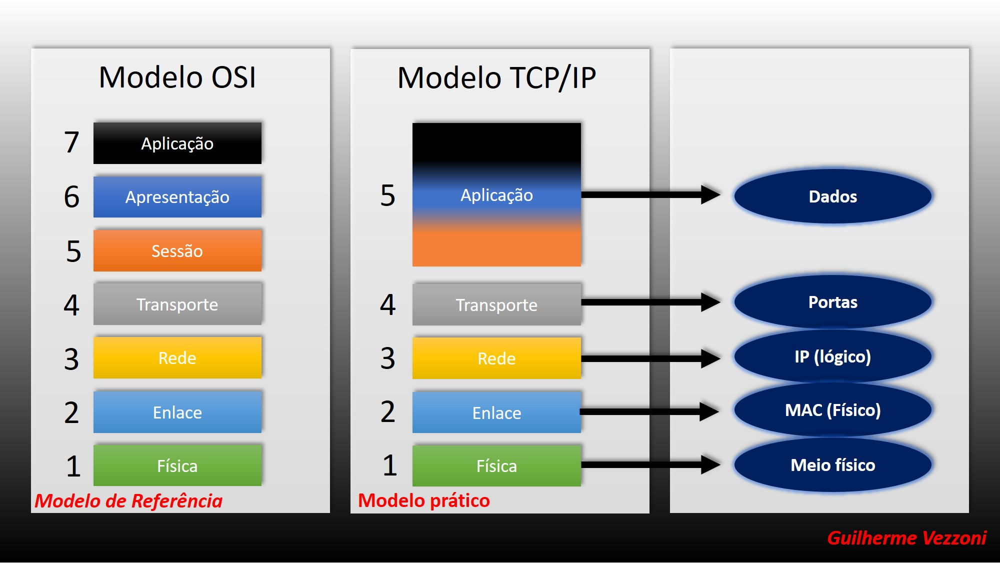

Protocolos de Rede
Na rede, um protocolo é um conjunto padronizado de regras para formatação e processamento de dados. Os protocolos permitem que os computadores se comuniquem uns com os outros.
Nesta seção, vamos aprender sobre os fundamentos das redes e protocolos de comunicação de forma direta e simplificada.
1. O que é uma Rede de Computadores?
Uma rede é um conjunto de computadores interconectados que compartilham recursos e informações.
2. O que são Protocolos?
São conjuntos de regras que definem como os dados são transmitidos e recebidos entre diferentes dispositivos na mesma rede.
3. Modelo TCP/IP
O TCP/IP é a arquitetura principal da Internet, dividida em quatro camadas: Aplicação, Transporte, Internet e Acesso à Rede.
